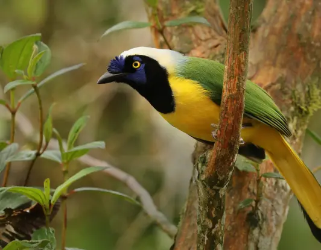
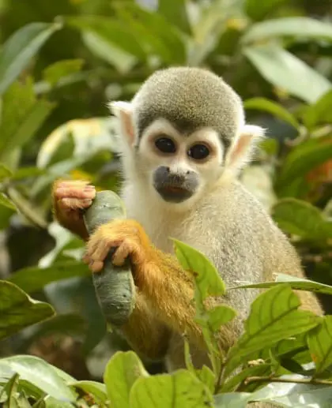
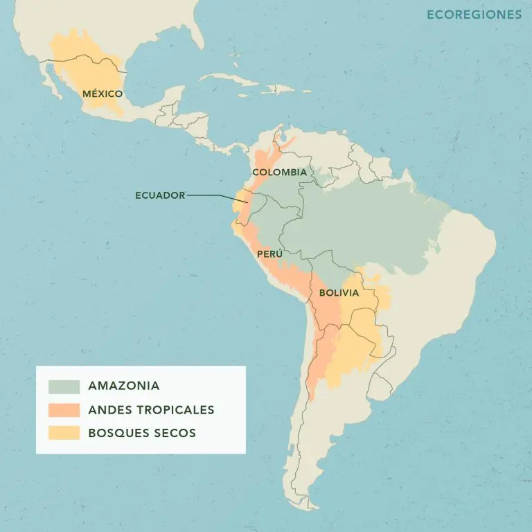
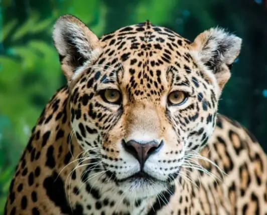

Protegemos los bosques más biodiversos del mundo
de la mano de quienes mejor los conocen: los pueblos
indígenas y comunidades locales.
En Naturaleza y Cultura Internacional entendemos que la conservación efectiva va más allá de establecer áreas protegidas. Trabajamos de manera mancomunada con aliados locales para crear y fortalecer las condiciones que hacen posible proteger la biodiversidad hoy y garantizar su permanencia para las futuras generaciones.
Durante más de 30 años, nuestro equipo ha vivido y trabajado en los territorios que protegemos, construyendo relaciones de confianza con comunidades, gobiernos locales y aliados estratégicos.
Esta es una conservación diseñada para perdurar.

Hectáreas protegidas en América Latina
11.9
Millones
Toneladas de CO₂e almacenadas en ecosistemas naturales
Pueblos indígenas y comunidades locales aliadas
Especies amenazadas protegidas
Nuestro trabajo es posible gracias a las alianzas que construimos con comunidades locales, pueblos indígenas, gobiernos, organizaciones de la sociedad civil y socios estratégicos.
Creemos que las soluciones más duraderas nacen de quienes conocen y habitan los territorios. Por eso promovemos la gobernanza territorial, el fortalecimiento de capacidades locales y acompañamos procesos que deriven en beneficios para las personas gracias a la conservación de la naturaleza.
Más de 30 años
de experiencia
94% de nuestro personal
trabaja en territorio

Trabajamos en los paisajes más biodiversos de Latinoamérica, protegiendo ecosistemas clave para la vida en el planeta. Priorizamos aquellos territorios más amenazados y de mayor valor ecológico, donde la conservación es imperativa.
Estos paisajes albergan algunas de las mayores reservas de carbono del mundo y una biodiversidad única e inigualable. Son lugares extraordinarios e irremplazables, esenciales para enfrentar la crisis climática y conservar el patrimonio natural de las futuras generaciones.
EXPLORA NUESTROS PROGRAMAS
Imaginamos un futuro en el que los bosques, ríos y ecosistemas de América Latina permanecen conectados y saludables; donde las comunidades prosperen junto a la naturaleza y donde la biodiversidad continúe sosteniendo la vida para las generaciones venideras.
Cada paisaje donde trabajamos contribuye a hacer realidad esa visión.
CONOCE NUESTRA VISIÓN 30 años de compromiso con la naturaleza
Naturaleza y Cultura
Internacional
es una
organización
no
gubernamental 501 (c) (e)
EIN: 33-0773524